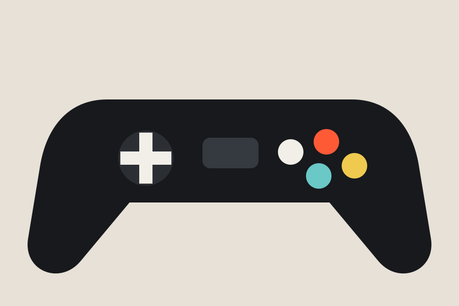
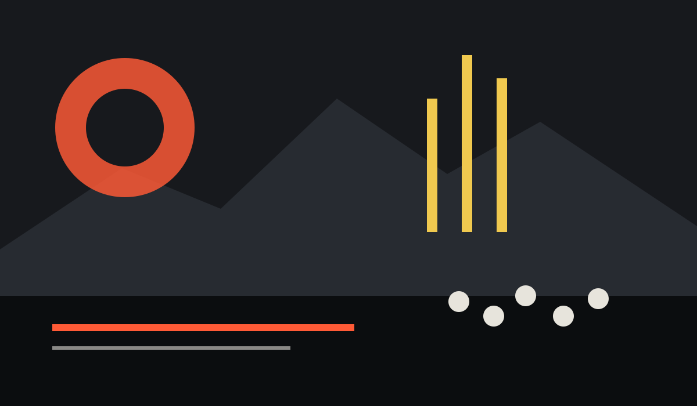

PC
Configurações recomendadas nem sempre contam a história inteira
Antes de mexer no hardware, vale entender resolução, taxa de quadros, armazenamento e o tipo de experiência que você espera.
Uma página para acompanhar lançamentos, atualizações, hardware, tendências e acontecimentos do universo dos videogames.
Antes de mexer no hardware, vale entender resolução, taxa de quadros, armazenamento e o tipo de experiência que você espera.

Catálogos maiores facilitaram o acesso, mas também deixaram mais difícil decidir o que jogar depois.

O catálogo é uma vantagem clara, mas curadoria e organização passaram a importar tanto quanto quantidade.

Tamanho da tela, bateria e peso fazem diferença quando a proposta é levar a biblioteca para qualquer lugar.

Escopo controlado pode dar mais identidade ao projeto e facilitar ajustes ao longo do desenvolvimento.

Artistas usam as limitações visuais como linguagem, misturando animações modernas e leitura imediata de tela.

Assistências ajustáveis e modos curtos aproximaram estilos de público que antes raramente dividiam o mesmo jogo.

Mapas menos congestionados e referências visuais mais claras ajudam o jogador a explorar sem depender de marcadores.